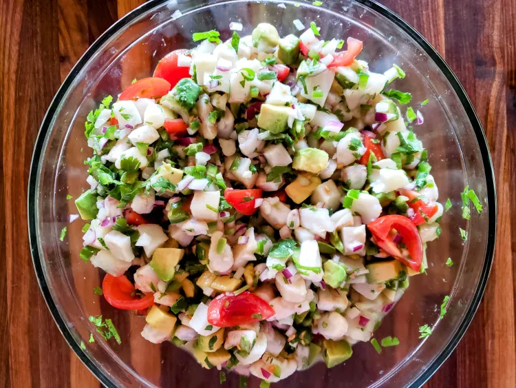
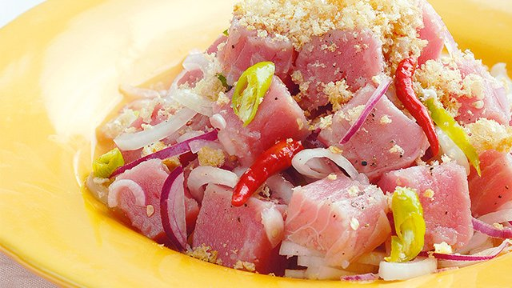

Step 1: Prepare Ingredients

Gather fresh fish, vinegar, onion, tomato, ginger, calamansi, salt, and pepper.
Step 2: Wash the Fish

Combine fish cubes with 3/4 cup vinegar. Let sit for 2 minutes, then drain while squeezing out excess vinegar.
Step 3: Mix Ingredients
Combine drained fish with tomato, ginger, calamansi, salt, and pepper. Toss gently.
Step 4: Chill the Kinilaw

Cover and refrigerate for at least 30 minutes (no longer than 3 hours).
Step 5: Serve and Enjoy
Serve chilled and enjoy with a pairing of beer!